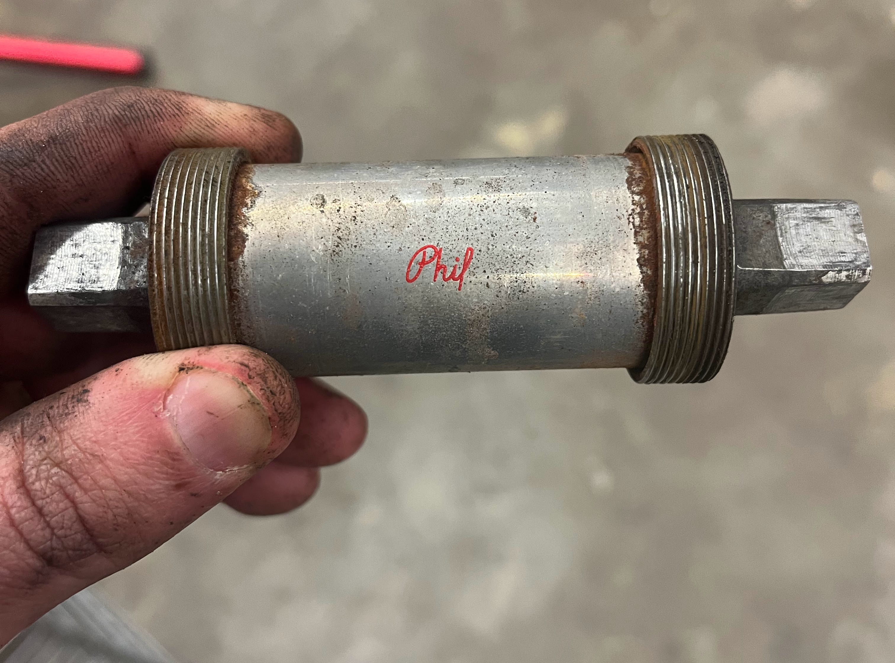

gantt
axisFormat %b %d
tickInterval 1week
excludes monday, wednesday, friday, weekends
todayMarker off
section legend
home :active, 2025-02-01, 2025-02-08
SBK : 2025-02-01, 2025-02-08
vendor :crit, 2025-02-01, 2025-02-08
section Frame work
Sandblast & powdercoat :crit, 2025-01-30, 1d
section Rehab components
De-rust small parts :2025-02-11, 3d
Replace bottom bracket, crank, cables, housing :2d
section Re-assembly
Chain, derailleurs :1d
Fork, brakes :1d
Wheels, seatpost, saddle :active, 1d
1st ride :milestone, 1d
section Cosmetics
True wheels :2d
Add mount points :crit, 1d
Cut fenders :crit, 1d
Install fenders :2025-03-31, 1d
Apply decals :active, 1d
Re-wrap handlebars :1d
You wouldn’t be shocked, you’d be satisfied to learn what’s inside your bike. It’s like the last puzzle piece or dessert at the end of a good dinner: something was already pretty good but your mental image of the thing would be incomplete without it. On the other hand, you would be shocked at how much force is required to get the stuff inside your bike out.
Since I last wrote, I purchased an annual membership to the Somerville Bike Kitchen and promptly began using their nichest of tools. To wit,[^Think about that phrase for a second! It is such fun to say yet what is its literal meaning?] I found myself in need of a headset cup removal tool. You may not have heard of that tool before but, given that it has a name, it sounds necessary enough: how else are am I to remove my headset cups, save for a headset cup removal tool? The tool looks like the end of a rifle that Jerry just smushed Tom’s tail into, just after it fired.

Before I spent 10 minutes trying to get Gemini to guess what I was trying to say, I lost 30 minutes trying to tap the headset cups out using a hammer, a flathead screwdriver, and this deliciously 80s tutorial. When I found the tool at SBK, I thought I was finally on the downhill of the roller coaster. Instead, my experience was another 30 minutes that sounded a lot more BANG WHAP THUD than tap tap tap.
The force required was somewhat understandable, however, when you consider that they held. I’m not talking about the bearings and washers pictured here but rather that these cups held back the crap of the world that had splattered itself over every other millimeter of my bike for the last half century. ![Headset bearings and washers.] The inside of the headtube was immaculate. It bore paint residue and nothing else; the air inside had probably not been uncorked since the 1970s.
Enough sentimentality, let’s think about time and its grotesquely modern equivalent—money. In terms of time, I’m behind schedule. This week, I’m supposed to be truing wheels and receiving the bike back from painting. Instead, I’ve just dropped it off at Pike Powder Coating. Like a good agilist, I’m going to roll with these changes and update my trusty Gantt chart.
I’ve decided that, to be an even better agilist, I need to change how I sequence this project. Instead of doing everything before I put the bike back together, I’m only going to do the things now that require multiple components to be removed. For example, I’m going to put off truing my wheels because those only require the wheels themselves to be removed while work on the bottom bracket requires removing the crank and pedals as well. This way, I can get to an MVB faster and—far more importantly—I can mitigate the risk that something I change will cause unexpected impacts. Making one change at a time gives me a feedback loop so that I can isolate the effects of individual changes. It also can help keep up momentum because I will be able to feel the impacts of each new change once I make the bike rideable again.
With all those thoughts in mind, here’s my new timeline:
In this version, my goal is to be able to ride the bike before my trip to Italy in mid-March. I’ll drop off the bike at the framebuilder while I’m traveling, and then return to finish the build.
Next up is the thankless job of de-rusting and cleaning all the components that I want to keep; things like the derailleur that are just grungy and deserve a thorough wash. I’ll need to grab a plastic bucket and wear my newly procured apron in order to do this safely and I have to say that this just sounds like a bore to me, even though its result is something I’m quite excited about.
{kind=link}
But not as excited as I am about the bottom bracket. I never thought I’d be saying those words until I discovered that the bottom bracket I removed from this bike was a Phil Wood. These retail for about $200 today and their design hasn’t changed since the 1970s, which means that I can still buy new parts for it! My first thought when I took this out was actually a four-letter word (or several) because my original plan was to replace whatever was installed with a $40 Velo Orange cartridge. Its pedigree demands somewhat better treatment instead. As snobby as that sounds—and it most definitely is snobby—take a look at this thing: 
All these parts make me curious about who owned this bike before me because I can’t imagine a more expensive build. I thought about what everything from the component manufacturers would cost in today’s dollars and here’s what I got. It’s difficult to compare for a lot of reasons but, notably, Campagnolo never built another touring groupset. Their dabbles in gravel are (hopefully) comparable so I went with the top-spec Ekar groupset and Levante wheels. It assumes disc brakes but, then again, it also assumes integrated shifting and 13 speeds. Cinelli luckily also sells their Giro d’Italia bars, so that comparison is actually quite straightforward. I am missing some of the brands and lots are ranges but here’s the guess:
| component | cost |
|---|---|
| Campagnolo Ekar groupset | $1,300 |
| Campagnolo Levante wheels | $1,200 |
| Cinelli handlebars | $95 |
| Phil Wood bottom bracket | $200 |
| Unknown brand seatpost | $100-$200 |
| Unknown brand saddle | $100-$200 |
| Custom steel frame & assembly | $1,000-$3,000 |
| Total | $4,000-$6,500 |
In 1975 dollars, that would equate to $700-$1,100, amazing for a bike for which I paid $400 in 2020.
Anyway, here’s the bike, all stripped of components and ready for paint.